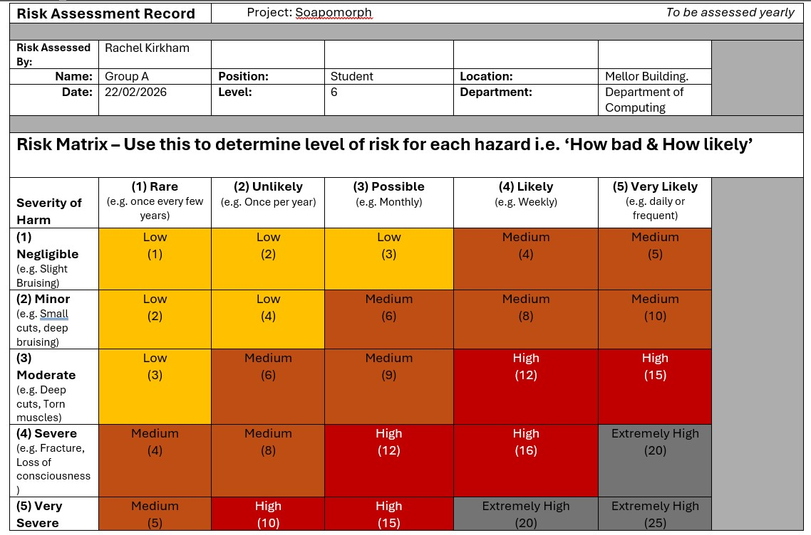
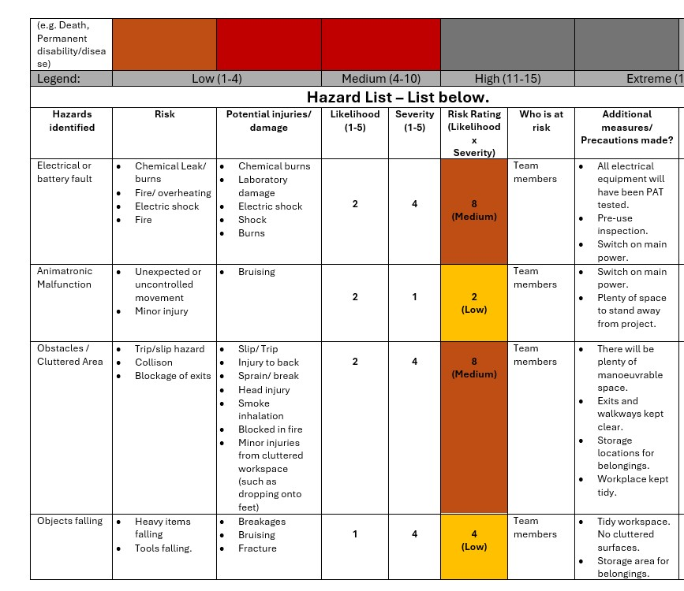
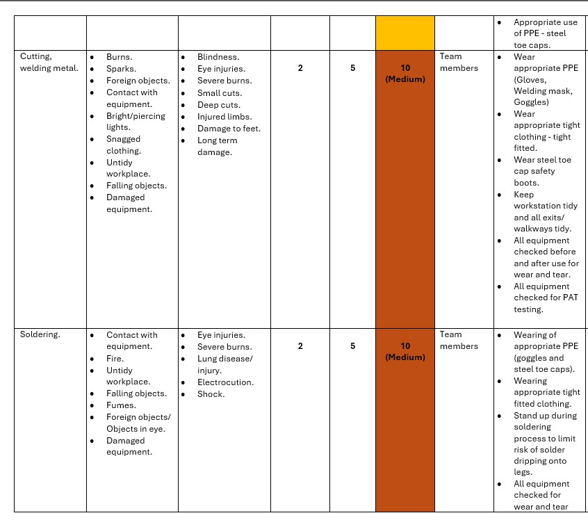
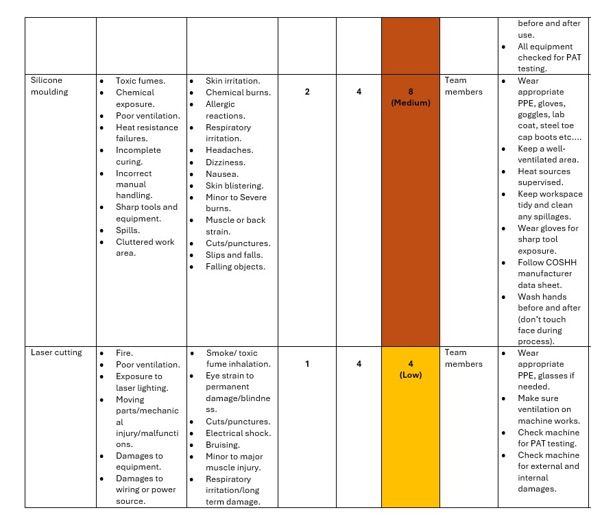
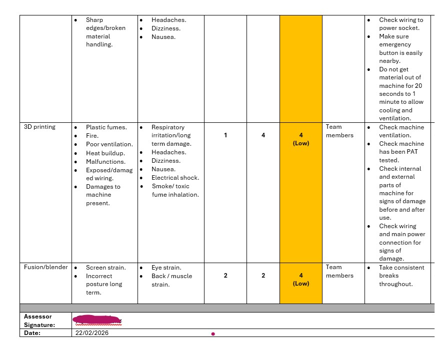

Risk Assessment
Part of the table has been cut off to keep data protection on participants names in the project. This is following the GDPR (General Data Protection Regulation) act 2018.





Testing Plan
As a complete testing plan was not produced, the testing plan focused on validating the design through meticulous trial and error digital analysis and simulation.
- Mechanism simulation test: The jaw and mechanism would be tested virtually in AutoCAD fusion 360 or blender. To test whether the push motion from the mechanical accuator could also lower the jaw simultaneously, and revert back to its closed position.
- Clearance and Tolerance Test: By assembling the model, mechanism and base on CAD, spacing and clearance will be analysed especially around the jaw connection, to make sure that parts can move freely and do not damage other components. This is crucial to assess the spacing of the mechanism movement to the spine and decorative hoses.
- Material Suitability: By utilising EduPack, material assessment for the focused criteria can be graphed and analysed before making any final commitments to the physical artefact.
- User interaction testing: Through the simulation, the project can be assessed for future expansion, where sensors should be to avoid hand contact, and injury to a user should the mechanism suddenly speed up.